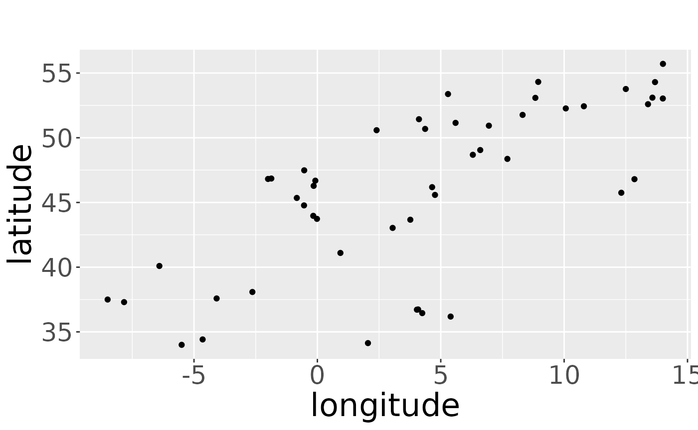
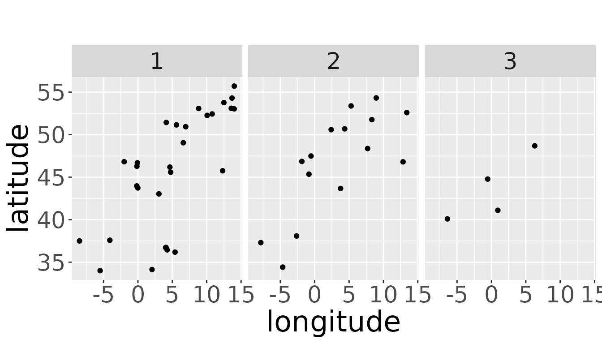
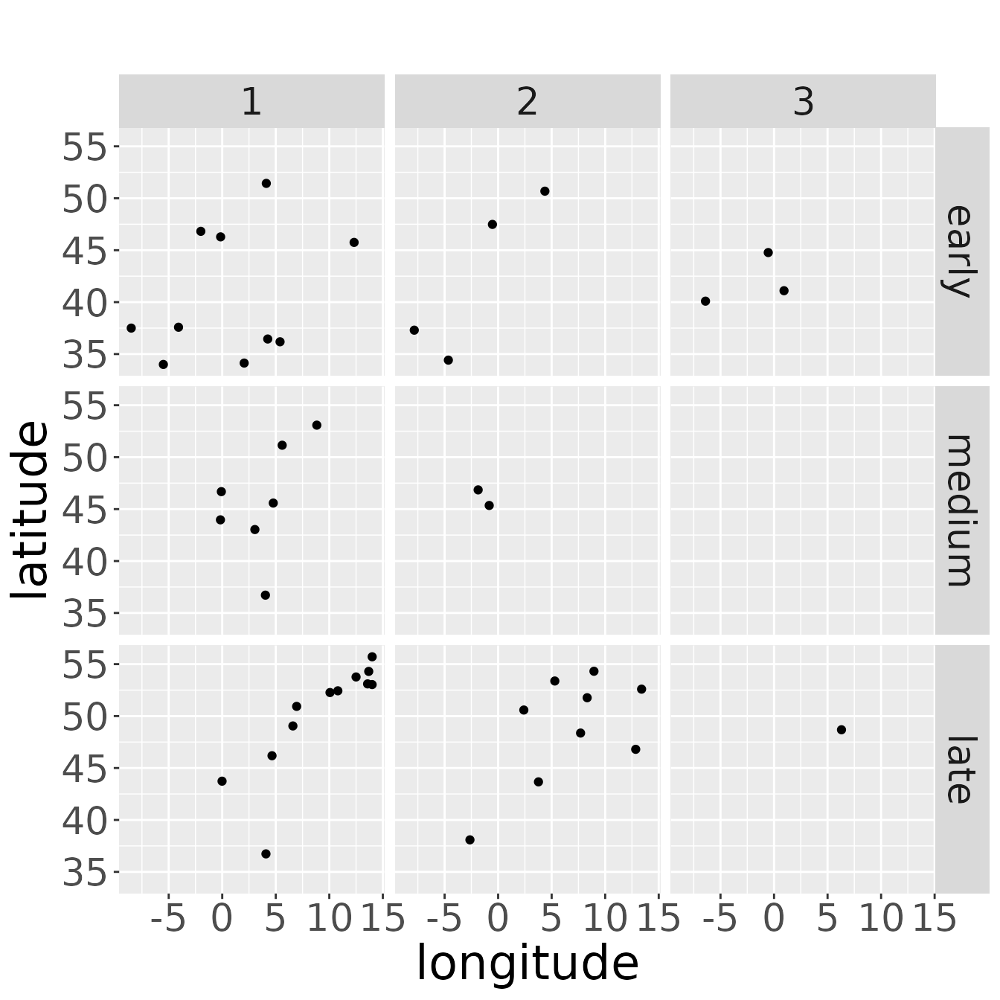
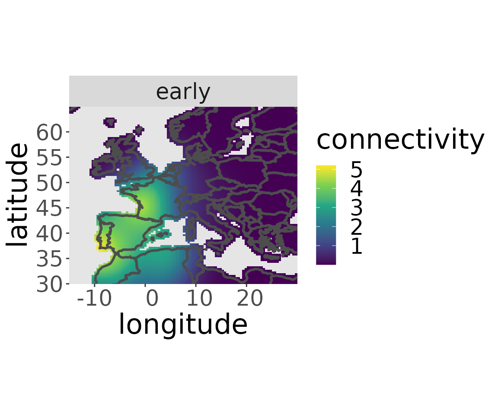

Working with real-world data
Saskia Schirmer
Source:vignettes/workingWithRealWorldData.Rmd
workingWithRealWorldData.RmdThe example data set is a real-world data set of European robins. They are marked during autumn migration at a stopover site. The breeding origin is unknown but we assume that different breeding populations migrate at different times. Therefore, we partition the data sets in early, intermediate and late passing birds and assume that early, intermediate and late migrating individuals origin from different breeding areas. The data set only includes dead recoveries made between November and February, when we assume the robins to have arrived in their wintering areas.
Working with real-world data in the CONSURE-package is easy if the data has the right format. Therefore, we need to check the structure of the data. We load the data and look at the structure:
data("robinsInit")
str(robinsInit, max.level = 2)
#> List of 4
#> $ markData :'data.frame': 3 obs. of 2 variables:
#> ..$ markArea : chr [1:3] "early" "medium" "late"
#> ..$ markedInds: num [1:3] 34177 32389 31833
#> $ recoveryData :'data.frame': 48 obs. of 4 variables:
#> ..$ markArea: Factor w/ 3 levels "early","late",..: 2 2 2 2 2 2 2 1 2 2 ...
#> ..$ recLat : num [1:48] 54.3 52.6 55.7 53.8 53.1 ...
#> ..$ recLon : num [1:48] 13.7 13.4 14 12.5 13.6 ...
#> ..$ age : int [1:48] 1 2 1 1 1 1 2 1 2 2 ...
#> $ window :List of 5
#> ..$ type : chr "polygonal"
#> ..$ xrange: num [1:2] -15 30
#> ..$ yrange: num [1:2] 30 65
#> ..$ bdry :List of 18
#> ..$ units :List of 3
#> .. ..- attr(*, "class")= chr "unitname"
#> ..- attr(*, "class")= chr "owin"
#> $ observationTime: num 5The data must provide information on the marked individuals and the dead recoveries. For that it must contain:
- a data.frame for the marked individuals with one row per breeding area and columns for
- the name of the breeding area (here: “markArea”, you can use any column name, see below for details)
- the number of marked individuals per breeding area (here: “markedInds”)
- a data.frame with one row per recovered individual and columns for
- geographical coordinates (longitude and latitude in two-dimensional non-breeding space) of the dead recoveries (here: “recLon” and “recLat”)
- the breeding origin of the dead recovery (here: “markArea”)
- the age at death of the breeding origin (here: “age”)
- the observation time. This is just one number. E.g., when a study took place over 3 years, the observation time is 3 (here: “observationTime”).
- the shape of the non-breeding area. A minimal solution would be a rectangle around the assumed non-breeding area or the dead recoveries. Ideally, it is an owin-object with the outlines of the map in the relevant non-breeding area (here: “window”).
If we choose custom column names, we have different options to tell CONSURE, which column is which. As we will see later, this is only a problem for the data frame of dead recoveries, not for the data frame of marked individuals. We need to be careful and tell CONSURE which information is in which column. The following options exist: * The columns can be named by the default names “longitude”, “latitude”, “age”, “markArea”. * The names of the columns can be forwarded to a specific function. The arguments in the functions are * xname: longitude * yname: latitude * timename: age * markAreaName: markArea * The names of the columns can be forwarded one time to the renameData function, which gives back a data.frame with the default column names.
As we see by the structure output above, the example data set is not named by the default column names.
colnames(robinsInit$recoveryData)
#> [1] "markArea" "recLat" "recLon" "age"We rename it using the function renameData and overwrite the data.frame of dead recoveries by the renamed data.frame
robinsInit$recoveryData <- renameData(recoveryData = robinsInit$recoveryData,
xname = "recLon",
yname = "recLat",
timename = "age",
markAreaName = "markArea")Now, the data.frame has the default column names:
colnames(robinsInit$recoveryData)
#> [1] "markArea" "latitude" "longitude" "age"The order of the columns is not important. The functions in CONSURE only work on the names of the variables. The constructor of the markRecaptureObject throws a message, if the column names do not equal the default values.
Initializing the markRecaptureObject
Now, we can initialize the markRecaptureObject:
rwd <- markRecaptureObject(window = robinsInit$window,
realRecoveries = robinsInit$recoveryData,
markedInds = robinsInit$markData$markedInds,
observationTime = robinsInit$observationTime,
breedingAreaNames = robinsInit$markData$markArea)The method estimates a robust linear model to estimate the parameters. If an ordinary linear model should be estimated instead, the argument robust must be set to FALSE when initializing the markRecaptureObject.
Looking at the raw data
We can look at the pattern of the raw recoveries and check if e.g., the window matches with the pattern:
plotRawRecoveries(rwd)
#> Source : http://tile.stamen.com/terrain-background/3/3/2.png
#> Source : http://tile.stamen.com/terrain-background/3/4/2.png
#> Source : http://tile.stamen.com/terrain-background/3/3/3.png
#> Source : http://tile.stamen.com/terrain-background/3/4/3.pngWe can also get a hint, if there is enough data for the estimation process. For example, there should be data points in every age class:
plotRawRecoveries(rwd, facetByAge = TRUE)and there should be data points (= dead recoveries) for every area of marking considered in the data set. (That does not mean, that there must be dead recoveries of every possible breeding area of the species). If there are no dead recoveries for a breeding area, we may consider to omit this breeding area or to join breeding areas, if this seems to be appropriate, e.g., because it lies inside or very close to another breeding area.
plotRawRecoveries(rwd, facetByArea = TRUE, areaNames = c("early","medium","late"))
We can also look at plots for every breeding area and age class. One assumption of the model is, that survival and recovery probability does not depend on the origin of the animal. So, think carefully about the interpretation: Only if there are recoveries in the same wintering area originating from different breeding areas, the point pattern created by the recoveries should change in a similar way from age class to age class. If the recoveries of different breeding areas occur in different wintering areas, the pattern may look quite different between the age classes without violating the model assumption. Also small sample sizes may cover similar as well as dissimilar point patterns. In the case of the example data, the data set is small and therefore, results should be treated with care.
plotRawRecoveries(rwd, facetByAge = TRUE, facetByArea = TRUE,
areaNames = c("early","medium","late"))
Estimating survival
For estimating survival we must estimate the kernel density of the aggregated dataset. We choose the aggregated dataset by setting all to TRUE. The estKDE-function also specifies the spatial resolution for the estimation process. The default value is a resolution of 100. If you want another resolution, set the argument res to the value. The kernel density estimator automatically calculates a fixed bandwidth in space. It can be specified to another value by setting the argument bw. The temporal bandwidth defaults to 1.1. This oversmooths age classes which differ by one year slightly. It can be changed by setting the argument lam.
rwd <- estKDE(rwd,all = TRUE)
#> Calculating trivariate smooth...Done.
#> Edge-correcting...Done.
#> Conditioning on time...Done.
plotKDE("all",rwd)
Now, survival is estimated by applying a linear model to the logarithm of the kernel density in every point of the map across all age classes. So the model is log-linear in age. The survival estimator is the exponential of the slope of the linear model. It can be estimated by the function estS:
rwd <- estS(markRecaptureObject = rwd)The plot is made with plotS. If not all values between 0 and 1 are taken on, zlim can be set to specific value to obtain a clearer view of the survival pattern.
Estimating the migratory connectivity of the aggregated dataset and the recovery probability
To be able to estimate the recovery probability we need to estimate the migratory connectivity of the aggregated dataset.
rwd <- estM(rwd, all = TRUE)The plot of the aggregated migratory connectivity also gives an insight into the distribution of the considered subpopulation of the species.
plotM(rwd, "all")The recovery probability is the constant which ensures the migratory connectivity to integrate to 1 over the whole non-breeding area. It can be estimated by the function estR and just returns a constant value:
rwd <- estR(rwd)
rwd$estimates$r
#> [1] 0.0005363178Estimating the migratory connectivity for each breeding area
To obtain the migratory connectivity for each breeding area, we need to estimate the kernel density for each breeding area separately. The separate kernel is estimated for each kernel density if the argument all is FALSE, which is its default value.
rwd <- estKDE(rwd)
#> [1] 3.869201
#> Calculating trivariate smooth...Done.
#> Edge-correcting...Done.
#> Conditioning on time...Done.
#> [1] 2.193333
#> Calculating trivariate smooth...Done.
#> Edge-correcting...Done.
#> Conditioning on time...Done.
#> [1] 3.232601
#> Calculating trivariate smooth...Done.
#> Edge-correcting...Done.
#> Conditioning on time...Done.The kernel density estimate can be visualized for a specific breeding area with the plotKDE-function.
plotKDE("early",rwd)Now, a linear model is fitted to the kernel density values across all age classes in every point of the non-breeding area. This time the slope is fixed to the slope of the linear model for the aggregated dataset. The migratory connectivity is part of the intercept of the linear model and can be estimated using the function estM. It will be estimated for each breeding area separately if the argument all is set to FALSE, which is its default value.
rwd <- estM(rwd)The migratory connectivity of a specific breeding area can be plotted with the plotM-function:
plotM(rwd, "early")
plotM(rwd, "medium")
plotM(rwd, "late")